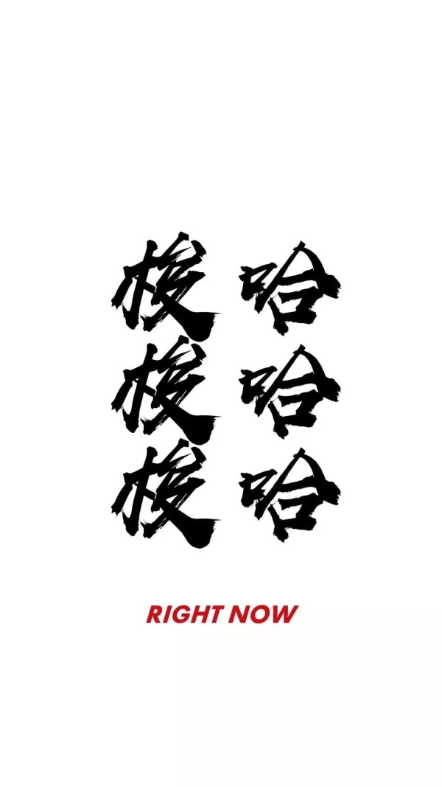

author：sdgzy
T1总感觉是一个假题，T3推推式子看出单调性就没了。
T2比较有意思：
题目大意：n个物品，属性为w,r，选择第i件物品后，之后每选择一个物品都会减去r的价值。
求按顺序选择物品的最大价值。
solution：
考虑对于一个必须选择的物品集合（大小为n）
答案是：\(\sum w_i - \sum r_i * (n - i)\)
价值总和是\(\sum w_i\)，是一个不变的值。
让后面那个最小
即r从小到大排序即可。
这样就把顺序问题解决了。
那我们可以按照r从小到大的顺序排序(这只是思路，写法有待考虑)
没有顺序问题，只是单纯的选择物品就是一个背包问题了。
结束上面的思考后。
让r从小到大排序。
然后依次选择:
转移方程
dp[i][j]=max{dp[i-1][j],dp[i-1][j-1]+W[i]-R[i]*(j-1)}
现在码力下降的很厉害。
#include <bits/stdc++.h>
#define gc getchar()
using namespace std;
const int maxN = 3000 + 7;
inline int gi() {
int x = 0,f = 1;char c = gc;
while(c < '0' || c > '9') {if(c == '-')f = -1;c = gc;}
while(c >= '0' && c <= '9') {x = x * 10 + c - '0';c = gc;}
return x * f;
}
int f[maxN][maxN];
struct Node {
int w , r;
}a[maxN];
bool cmp(Node a , Node b) {return a.r > b.r;}
int main() {
int n = gi();
for(int i = 1;i <= n;++ i) a[i].w = gi(),a[i].r = gi();
sort(a + 1,a + n + 1,cmp);
for(int i = 1;i <= n;++ i)
for(int j = 1;j <= i;++ j)
f[i][j] = max(f[i - 1][j] , f[i - 1][j - 1] + a[i].w - a[i].r * (j - 1));
int ans = 0;
for(int i = 1;i <= n;++ i) ans = max(ans , f[n][i]);
printf("%d",ans);
return 0;
}